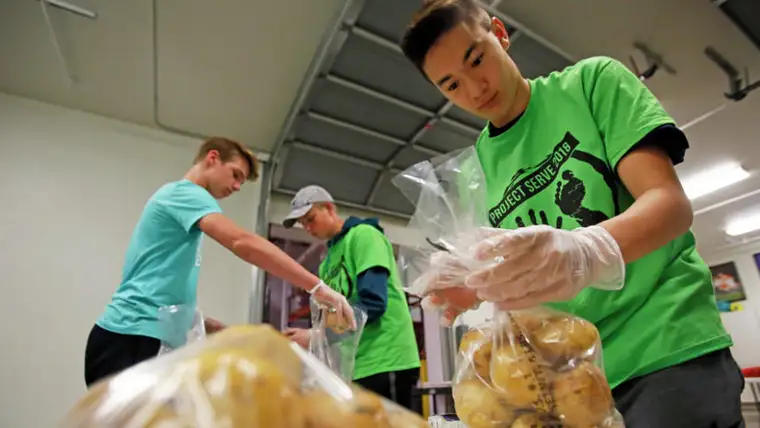

FARGO — Along with their labor, many of the teens involved in the Project Serve event last weekend shared loads of lightness and laughter as they helped the community.
“Their spirit and attitude were great,” says Daniel Berg of CHARISM, a nonprofit beneficiary of the effort. “They did everything to the best of their ability, yet were able to goof around and have fun with it, too.”
According to Berg, one group assigned to pick up trash started a contest to find the goofiest item.
“They found a Barbie that was all torn up,” he said. Another made a homemade gooey concoction, “slime,” and enjoyed handing it out to kids in the park — and playing with it themselves.
Everything on his “laundry list” for the crew — around 15 students and several adult leaders from Fargo’s Bethel Church, which heads up the one-day, annual service project — ended up finished in a two-hour period. That included everything from painting a waiting-room wall and shelves to organizing the inventory at a food pantry and cleaning up park and garden areas.
“It was pretty cool to see,” Berg adds. “They killed it; they did so much for us.”
Project Serve started in 2005 as an alternative to the typical selling of items like candy bars to raise funds for mission trips and youth conferences — events to enhance character development and leadership.
“We just thought, ‘Why not serve here to raise funds for serving elsewhere?'” says Sarah Dunkel, Bethel’s associate director of student ministries. “It’s a way for (the youth) to give back while learning about some of the great nonprofits in the area.”
Businesses and individuals sponsor the crews, while involved nonprofits coordinate projects they need done ahead of time. The morning of the event, held on May 19 this year, students met and donned matching T-shirts, then set off to service sites, one in the morning and another after lunch.
“We then gather again at the end of the day to share stories and write thank-you notes to the donors,” Dunkel says.
This year, 12 businesses benefited and 70 students and 20 adult leaders rolled up their sleeves to accomplish 500 cumulative service hours at locations like the Great Plains Food Bank, YWCA and the Sanford Fargo Marathon. The efforts will help finance a youth conference in Kansas City, summer service-work on an American Indian reservation and a mission trip to Honduras.
Dunkel says these outside activities help foster spiritual development in ways other endeavors can’t. “When we can take a group outside of their normal comfort zone and deeply challenge them to step out in faith, I think the most personal growth happens.”
High school senior Carl Johnson has helped with Project Serve for several years. “It’s been important to just see what being a servant is like. After all, Christ came not to be served but to serve, so to be able to put that into action is something that young people can learn.”
He says it’s the difference between “head knowledge” — learning what being a Christian is supposed to mean — and the lived experience.
“It should be expressed through your life and inspire you to invest in other people,” he said.
Johnson, who plans to become pastor like his father, says he’ll bring these experiences with him, including the time he spent on the Rosebud Indian Reservation in South Dakota.
“It’s a very low-income area, and a lot of the people suffer from malnourishment,” he says, noting that because some families can’t afford to run their heaters in the winter, his group spent many hours chopping firewood.
“Any service project is eye-opening. We can easily find ourselves in our own bubble, not considering people outside our immediate group or churches,” he says. “It’s not only a growth experience in an immediate sense, but it can inspire and encourage you for the future.”
Jay Thoreson, community outreach officer at New Life Center, has been involved with Project Serve as a parent and youth leader, as well as in his current capacity.
“I’ve been impressed by the numbers involved, the level of organization it takes and how many different sites are helped,” he says. “But I’m also impressed by the kids, and how very engaged they are. They not only work hard but also ask questions about what we do and what’s expected of them.”
The work itself isn’t very glamorous, he adds.
“We had them scrubbing down floors, wiping down walls, and in general, cleaning up.”
Even so, this year’s group arrived with cheerful attitudes and, especially noteworthy, treated the guests at New Life Center with respect.
“They were willing to just jump right in, as opposed to being teenagers hovering in the corner trying to get out of work,” he says. “These guys were all in.”
[For the sake of having a repository for my newspaper columns and articles, I reprint them here, with permission, a week after their run date. The preceding ran in The Forum newspaper on May 26, 2018.]